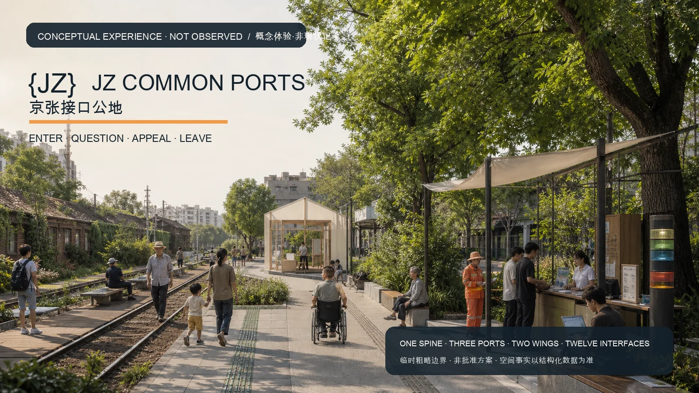
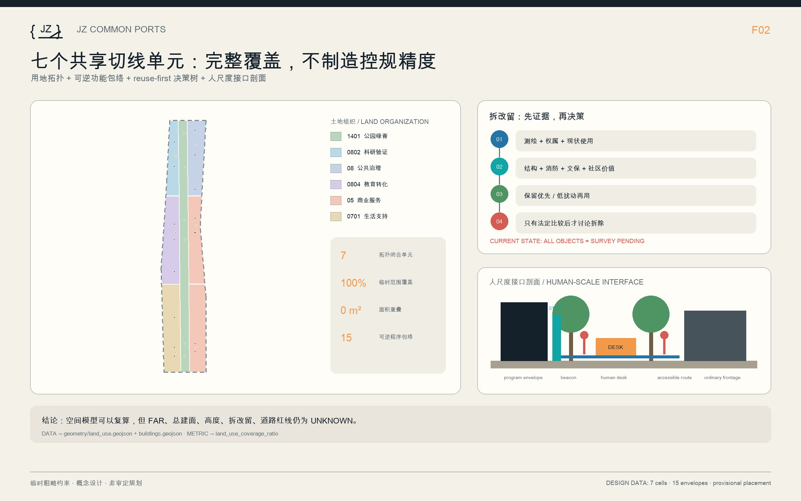
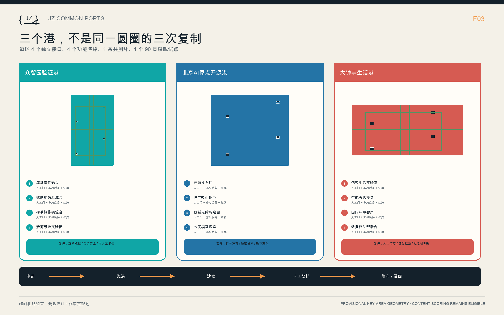
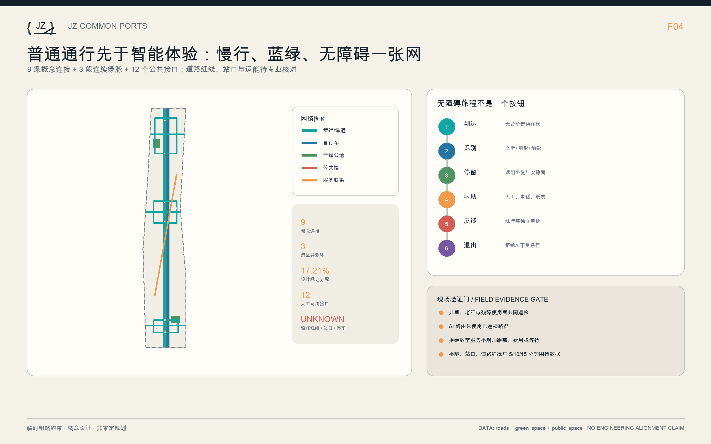

三大定位
百年京张文化带 · 都市AI生活体验带 · AI融合创新带
把百年铁路遗产转成一条人人可进入、质询、申诉和退出的AI公共接口：一脊三港两翼十二接口。

解释层不替代证据层。临时边界、可复算指标和未知条件在每张图中同时可见。
百年京张文化带 · 都市AI生活体验带 · AI融合创新带
全栈自主 · 世界级生态 · AI+场景 · AI活力城市 · 全球治理话语
概念品牌 · 生态 · 场景 · 公共空间 · 文化叙事 · 长期运营全部有独立证据。



示意图无地图瓦片、无远程请求。边界虚线是临时粗略约束；设计对象均非地块级。
每港四接口、局部共测环、可逆功能包络与旗舰试点；位置随正式 polygon 整体重算。
全栈验证、安全、标准协作与公共责任
4 个接口 · SC-01, SC-02, SC-03, SC-04近校成果转化、开源贡献、公众学习与权利服务
4 个接口 · SC-05, SC-06, SC-07, SC-08包容日常服务、智能原生商业与公共反馈
4 个接口 · SC-09, SC-10, SC-11, SC-12全栈验证、安全、标准协作与公共责任
旗舰: SC-01
筛选不会隐藏证据：无脚本时全部卡仍可展开。每卡保留人工和非数字等价服务。
12 张场景卡可见
暂停：model version change; missing test; severe safety flag
5 deterministic synthetic fixtures · NOT FIELD PERFORMANCE
暂停：license conflict; secret; missing accessibility note; model change
5 deterministic synthetic fixtures · NOT FIELD PERFORMANCE
暂停：high-stakes decision; identity inference; no human capacity
5 deterministic synthetic fixtures · NOT FIELD PERFORMANCE
证据链保持离线、可移植、可失效。真实共测仍是未来工作。
node visual/assets/replay-protocols.js --check15 个显式合成任务 + 15 个反事实断言；runner 独立推导控制并核对 schema、规范哈希、能耗、审计和持久化证据。它只证明规则可复现，不是模型或现场绩效。
replay-evidence.json · simulation.schema.json · replay-protocols.js · 复跑说明
未来共测预登记至少 24 个参与者场次；在授权、无障碍、人工等价、知情同意、独立公众席位、保险和保护措施到位前不得开始，也不得把预登记写成已验证结果。
牵头者均为角色类型，不表示任何机构已授权。XS/S/M 是低置信规划包络，不是预算、报价或资金承诺。
正式边界 · 权属 · 现状建筑 · 交通轨道 · 文保生态 · 市政消防 · 无障碍基线 · 数据治理 · 运营授权 · 资金
| 项目 | 牵头/资源 | 前置许可 | 交付 | 验收 | 强制退出 |
|---|---|---|---|---|---|
| JZ-01 三港公共门槛与责任信标 | public_space_sponsor_role S · 30–90万元规划包络 3 staffed roles per open shift + independent steward and maintenance cover | ownership; heritage; fire; accessibility; event/use | three reversible pads, non-AI desk and status beacon | step-free, service parity and red-card drill pass | permission lapse, inaccessible route or unresolved red card |
| JZ-02 模型责任码头90日试点 | ai_assurance_role XS · 15–30万元规划包络 2 staffed roles per open shift + independent steward on call | data governance; public display; operator mandate | synthetic model-passport clinic | five fixture checks pass and severe flag drill holds publication | model version mismatch or missing human reviewer |
| JZ-03 开源发布厅90日试点 | open_source_community_role XS · 15–30万元规划包络 2 staffed roles per open shift + independent steward on call | content rights; venue; operator mandate | release passport clinic using cleared metadata | license/accessibility/source gates complete; appeal visible | license conflict or uncleared repository content |
| JZ-04 包容生活实验室90日试点 | community_service_role XS · 15–30万元规划包络 2 staffed roles per open shift + independent steward on call | service mandate; privacy; venue | synthetic service navigation with staffed parity | all high-stakes cases routed to human; refusal causes no service loss | human capacity unavailable or identity inference detected |
| JZ-05 中关村科技服务翼共享柜台 | technology_service_coordinator_role S · 30–90万元规划包络 3 staffed roles per open shift + independent steward and maintenance cover | venue; service qualifications; conflict policy | role directory and warm referral protocol | no unauthorized legal/financial conclusion; referral closure measured | conflict or pay-to-play access |
| JZ-06 小月河场景反馈翼共测路线 | public_realm_operator_role S · 30–90万元规划包络 3 staffed roles per open shift + independent steward and maintenance cover | ownership; ecology; traffic; maintenance | inspectable route, manual feedback and closure ledger | barriers assigned and human route always available | unsafe route or unresolved ecology/traffic issue |
| JZ-07 十二接口无障碍与非AI等价组件包 | universal_design_role S · 30–90万元规划包络 3 staffed roles per open shift + independent steward and maintenance cover | accessibility review; content rights; maintenance | tactile, audio, paper, seated-rest and human-help components | co-test with affected users; all 12 cards retain parity | component creates barrier or service downgrade |
| JZ-08 公共接口护照与审计台账 | public_interest_governance_role S · 30–90万元规划包络 3 staffed roles per open shift + independent steward and maintenance cover | records policy; privacy; public reporting | state, version, reviewer, pause and retirement record | every live interface has current passport and deletion evidence | missing reviewer/version or stale permission |
| JZ-09 四座可撤除贡献地标 | culture_public_art_role M · 90–250万元规划包络 4 staffed roles per open shift + safety/accessibility/maintenance cover | heritage; structure; fire; public art; copyright | responsibility beacon, open-source rings, echo ledger, century switchboard | rights clear, removable and contribution rules public | heritage conflict or personality/brand capture |
| JZ-10 京张公共接口周与四季运营 | programming_consortium_role M · 90–250万元规划包络 4 staffed roles per open shift + safety/accessibility/maintenance cover | event; safety; noise; content rights; crowd management | spring RFC, summer sandbox, autumn public review, winter retirement archive | year-round daily use protected; conversion and closure records public | event displaces daily access or safety/noise limits fail |
成本包络含90日可逆搭建、无障碍、当班人员、审计、拆除和15%退出准备金；不含土地、永久工程、市政增容和法定费用。正式启动前须由授权主体确定合法采购路径、至少三份合格报价与适用保险。
机器精值用于复算，公共数值使用合理精度。合成测试不等于现场绩效。
公告必选任务逐行映射
agent.1–agent.6 各有独立成果
设计深度与专业标准响应
任何文件更新后，manifest 哈希、图纸、HTML 和 self-check 全部重新生成。
案例只转译机制；概念封面不作场地证据；缺资料不会被写成确定控制。
open-city-ai maintainers · 2026-08-11
Brief, taskbook, enums, ranges, schemas and registered provisional geometry.
Mixed repository bundle containing official citations, maintainer summaries and provisional geometry; not itself a statutory or uniformly official control package.
北京市规划和自然资源委员会海淀分局 · 2026-08-11
Project purpose, three scope levels and formal task context.
Does not supply machine-readable official polygons or authorize this proposal.
open-city-ai maintainers from cleared taskbook summary · 2026-08-11
Three positions, five functions, three areas/two wings, agent.1-agent.6 and co-creation charter.
Agent-facing taskbook; not statutory planning control.
open-city-ai site-package maintainers · 2026-08-11
Normalized concept container and deterministic spatial review.
Rough provisional geometry; never an official redline or precise-area basis.
open-city-ai maintainers · 2026-08-11
Source status, use boundaries and missing-data navigation.
Registry status must not be promoted beyond its declared use.
北京市规划和自然资源委员会海淀分局 · 2026-08-11
Machine bridge from GeoJSON derived_from_source_ids to the package source register.
Alias preserves the central registry ID; it does not provide an official polygon or implementation authority.
open-city-ai maintainers · 2026-08-11
Machine bridge from SITE/KEY_AREA source_id to the package source register.
Temporary generation and review geometry only; prohibited as official redline, statutory control or precise survey basis.
中华人民共和国住房和城乡建设部 · 2026-08-11
Scoped response on urban design, public space, character and professional coordination.
Does not make this concept a statutory plan or replace professional approval.
中华人民共和国住房和城乡建设部 · 2026-08-11
Boundary for separating concept design from statutory control and approval.
FAR, height, road redlines and other statutory controls remain unknown and unapproved.
中华人民共和国自然资源部 · 2026-08-11
Classification vocabulary for conceptual land-use cells.
Codes organize the proposal and do not change existing or statutory land use.
open-city-ai standards registry · 2026-08-11
Records the architectural-depth gate as unavailable, optional and not addressed by concept envelopes.
source_status=needs_official_file; not evidence of architectural design depth or a formal compliance conclusion.
JTC Corporation, Singapore · 2026-08-11
Mechanism comparison: mixed research, work, living and public-space support.
No boundary, control, benchmark or implementation claim transferred to Jingzhang.
STATION F · 2026-08-11
Mechanism comparison: shared services and founder community programming.
Promotional self-description; used only as a mechanism prompt.
Maria 01 · 2026-08-11
Mechanism comparison: adaptive reuse and startup community operations.
No physical form or performance transferred.
Vector Institute · 2026-08-11
Mechanism comparison: cross-institution talent, research and responsible AI network.
Institutional model differs; no local governance authority inferred.
Massachusetts Institute of Technology · 2026-08-11
Mechanism comparison: campus-city translation interfaces and public-realm investment.
No spatial metric or delivery model copied.
Knowledge Quarter London · 2026-08-11
Mechanism comparison: culture, research and civic network collaboration.
Network description is context only; local membership and commitments not inferred.
北京国际科技创新中心 · 2026-08-11
Regional-synergy context for Three Science Cities and One High-tech Area.
Used to frame potential exchange topics only; no agreement or data-sharing commitment claimed.
北京经济技术开发区管理委员会 · 2026-08-11
Public evidence that cross-area science-and-industry coordination is a relevant mechanism topic.
Historical context; does not evidence a Jingzhang project partnership.
国家互联网信息办公室等七部门 · 2026-08-11
Scoped AI-governance reference for public-facing generative content services, complaints and applicable service disposition.
Article 14 is not a general user-exit right; Article 15 supplies no invented numeric response time; Article 17 does not apply automatically to every proposed interface.
全国人民代表大会常务委员会 · 2026-08-11
Scoped accessibility and staffed-service reference for the public-service matters enumerated in Article 39.
Article 39 is not generalized into a legal duty covering every public space or digital interface; this proposal voluntarily uses a broader design baseline.
国务院办公厅 · 2026-08-11
Policy design reference for parallel traditional and smart services in high-frequency elderly-use scenarios.
The 2020–2022 phased targets are not represented as a continuing 2026 legal duty or evidence of local implementation.
Codex × guyhuang · 2026-08-11
Conceptual experience layer only; non-observed and non-approved.
Synthetic image; not site evidence, survey, render of approved design, or construction promise.
Repository provisional SITE_BOUNDARY and KEY_AREA polygons are normalized containers for concept generation, not official redlines.
Machine values remain reproducible but public display is rounded; all geometry, ratios and drawings must be regenerated when official polygons arrive.
No surveyed building inventory, ownership, structure, height, heritage or approved retain-renovate-demolish classification is available.
BUILDING_FOOTPRINT features are reversible program envelopes only; floor area, FAR, height and demolition decisions stay unknown.
Road redlines, traffic counts, rail interface conditions, parking demand and engineering alignments are unavailable.
ROAD_CENTERLINE features show access intent only and cannot support bridge, tunnel, junction or parking feasibility claims.
Named implementing organizations, land rights, approvals, procurement routes, insurance and committed budgets have not been confirmed.
Action packages use accountable role types and low-confidence participant planning envelopes; no government, enterprise or institution is represented as committed.
Protocol tests use explicit deterministic synthetic inputs and paired counterfactuals with no personal data and do not measure field service performance.
The offline runner proves reproducible policy logic only; a field pilot needs consent, baseline, accessibility, insurance, safeguarding and independent public evaluation.
Ecology, soil, tree, hydrology, flood-control and maintenance baselines are unavailable.
Blue-green pockets and ratios are design allocations, not ecological performance or sponge-city compliance claims.
Heritage inventories, protection zones, view corridors and structural conditions have not been supplied.
Landmarks are removable public components; installation requires heritage, structure, fire, accessibility and copyright review.
Municipal utilities, electrical capacity, compute-energy demand, drainage, fire and emergency-response baselines are unavailable.
Edge-compute and public-service prototypes begin with low-power mock interfaces; capacity and permanent installation remain unknown.
文字、协议、{JZ}、图件、GeoJSON、HTML 与 PDF 为项目原创/确定性生成。概念封面由 OpenAI 图像生成工具在无参考图、无个人数据条件下生成，并永久标注非现状、非批准。案例未复制图像、地图或品牌资产。
copyright_statement.md